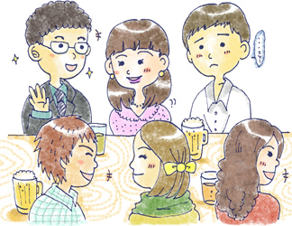

24 : 初対面のコミュニケーション
・初対面は得意ですか？

今回は“初対面のコミュニケーション”について考えていきます。 皆さんは 「初対面の人と話すのはなかなか苦手だなぁ」 と感じたことはありませんか？
例えば、合コンの場面を考えてみましょう。 合コンは初対面の人が異性ということで、なかなかハードルが高い初対面の場面です。 緊張もしやすいですよね！！
こうした合コンなど短時間でお互いの会話を通して、人間関係を築く場面では初対面のスキルが必要です。 現実問題、初対面で躓くと色々と損することが出てきてしまいます。 入口で躓いたら、長期的な付き合いも難しくなってきちゃいますよね。
・初対面は「自己紹介・自己開示」で差がつく
例えば
緊張しつつもなんとか一生懸命話すA君・・・
警戒しっぱなしでほとんど話してくれないB君・・・
もし皆さんでしたらどちらの方と今後お話したいでしょうか？ 人間ですからやはりある程度自己開示をしてくれる方と関係を続けたいと思うものです。
自己開示が少ないと、相手も話すきっかけがつかめないまま会話が進んでいきません。
もし皆さんがとても素敵な方なのに、初対面が苦手な故にもっと良い関係を築くチャンスを失っていたとしたら・・・とてももったいないことだと思います。
・なぜ初対面が苦手なんだろう？
では、初対面が苦手であると感じる理由にはどのようなものがあるでしょうか？ ここに理由を挙げてみましょう
・自己紹介が上手くいかない
自己紹介が上手くできればすぐに自分のことを知ってもらい、相手と打ち解けるチャンスが広がります。 自己紹介は練習でうまくなります 是非練習していきたいところです！
・きっかけ作りが苦手
会話を始める時、話題に詰まった時には何かきっかけがないと会話をすることは難しいです。 そのきっかけがなかなかできないために、相手との会話で沈黙が続いてしまう。 なんてことがあります。 なにか会話のきっかけを身近な話題で見つけることが必要です。
・良い自分を見せなくては！と考えすぎている
初対面ではつい良い印象を持ってもらおうと、背伸びをして良い自分をみせたいと思うものです。 「相手によく見られなければならない」こういう思いには、~べき思考というものが隠れています。 初対面で上手く喋れないと思ったら、考え方を変えていく必要もあります。
・初対面がうまくなれば得することがいっぱい
初対面のコミュニケーションスキルを上げるにはこれらの理由に対処していかなくてはなりません。
初対面は人間関係の入り口です。 この入り口が閉じている状態だと、せっかく魅力がある方も、その先に進めないことになってしまってとても損をしてしまいます。
逆に入り口が開けばそれだけ人間関係の幅も広がり、仕事や恋愛できっと得することが増えてくるでしょう！
次回から具体的に対処法や練習法について紹介していきたいと思います。 是非読んでみてくださいね♪
【今日のポイント】
★初対面を攻略しないと現実問題損することも
★自己紹介・きっかけ作り・考え方を変えることが鍵
 |
|